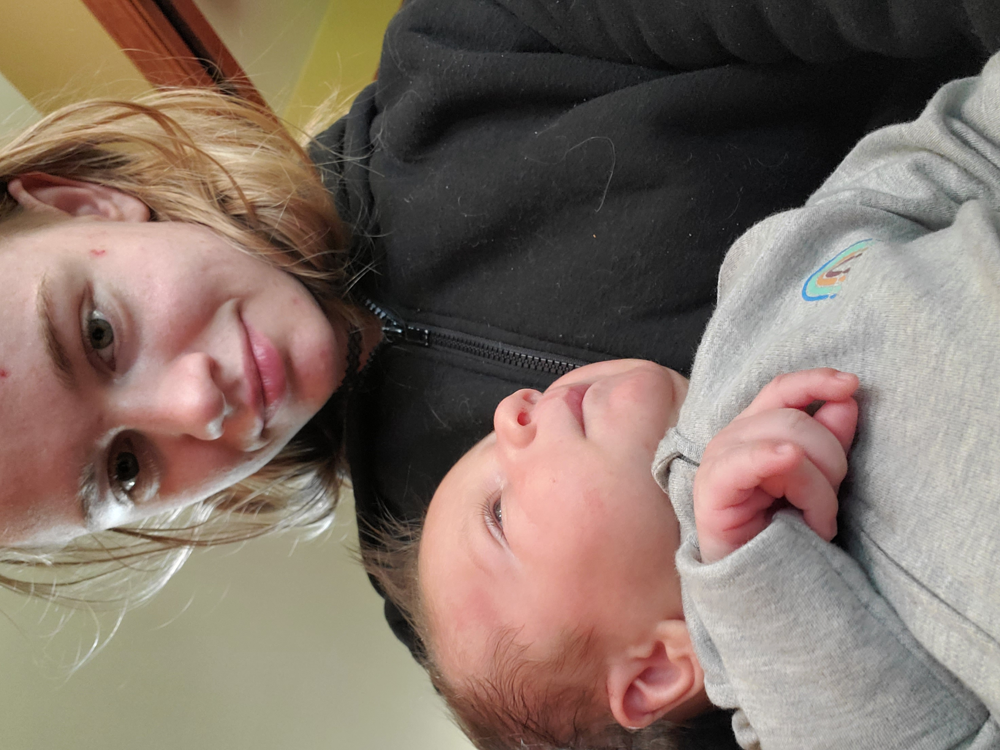

Time of day
 A bit about me... I'm 20 years old, work part time at Fleet Farm and live on a hobby farm. My coding interest started in middle school in a small coding unit in tech ed where I picked up coding really quickly. From there my experience grew in high school where I took 4 coding classes including 2 AP classes. Some of my hobbies include rock climbing and general exploring/adventure activities, knife throwing, reading, and drawing and art/creative projects. I don't have any really specific activities when it comes to creating and art, I tend to bounce around a lot.
I can't say I have specific favorites but here are some franchises and series that I love -